칩 내부의 Controller와 PHY에서 시작한 신호는 Pad, 패키지, PCB 채널, 커넥터를 지나 상대 칩에 도달합니다. Pad 이후의 패키지와 PCB도 신호 경로의 일부이므로 RTL 시뮬레이션 통과만으로 링크를 검증할 수 없습니다.
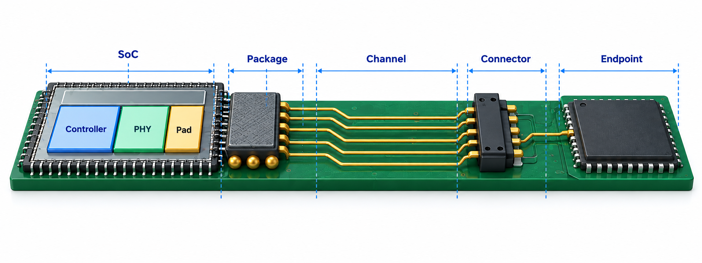
구조의 역할을 구분하는 개념도입니다. 실제 패키지에서 die, pad와 bump가 배치되는 형태와 치수는 구현에 따라 달라집니다.
신호의 형태와 수신 동작 예
디지털 데이터가 물리 채널을 지나면 유한한 상승·하강 시간을 갖는 전압 파형이 되고, 수신기가 정해진 시점에서 샘플링해 비트를 복원합니다. 아래는 0xB3를 보낸 1차 저역통과 채널의 교육용 예시입니다.
계층별 역할과 검증 관측점
실패를 관측한 위치와 입출력 계약을 함께 기록하면 RTL, PHY 설정, package/board 문제를 나누어 검사할 수 있습니다.
경계
입력/출력
관측 근거
Controller
주소·길이·순서 → 전송 요청
트랜잭션 로그, timeout, response
PHY
parallel data ↔ 핀의 파형
training 결과, sampling margin
Pad / package
IO 전압·전류 → 외부 연결
pin mapping, 전압 도메인, 기생 성분
PCB / endpoint
전송 신호 → 수신 판정
probe 위치, termination, 수신 error counter
예시: Controller에서 보드 채널까지
DDR은 DQS 같은 전달된 기준 신호로 데이터를 샘플링합니다. 고속 직렬 링크는 수신 데이터에서 타이밍을 복원하는 구조를 사용할 수 있습니다. 모든 PHY에 serializer·CDR·DFE가 동일하게 들어가는 것은 아닙니다.
DDR 읽기의 반환은 메모리 DQ/DQS 출력 → 보드 채널 → 수신 PHY sampling → Controller의 데이터 반환으로 이어집니다. PHY의 완료와 소프트웨어가 데이터를 사용할 수 있는 시점을 구분합니다.
9-2. IO 전기적 기초
구동 가능 상태와 보호 조건
디지털 IO는 push-pull 또는 open-drain 구조로 동작합니다. 출력 구동 능력과 부하, 입력 전압 범위, 보호 소자의 조건이 서로 맞아야 합니다.
Push-Pull 출력 구조
HIGH와 LOW를 모두 능동적으로 구동합니다. 상대적으로 낮은 출력 임피던스로 빠르게 충전·방전할 수 있지만, 반대 값을 구동하는 두 출력을 직접 연결하면 충돌합니다.
Open-Drain 출력 구조
LOW로 당기거나 High-impedance로 놓습니다. HIGH는 외부 pull-up 저항으로 형성되므로 저항과 기생 부하가 상승 시간을 결정합니다.
IO 구동과 전압 응답
Pull-up 저항과 부하 커패시턴스로 결정되는 RC 상승 응답을 확인합니다. 저항을 줄이면 상승은 빨라지지만 LOW 상태의 전류가 커집니다.
조건 설정 (Open-Drain)
RC 상승 전압 응답
VOUT(t) = VDD × (1 − exp(−t/RC)) 입력 임계값 0.3 VDD / 0.7 VDD는 비교를 위한 교육 조건입니다. 실제 장치의 VIL·VIH는 데이터시트에서 확인합니다.
측정 구성도
입력 임계값 예시
전기 방식별 주요 특성 비교
항목
Push-Pull
Open-Drain + pull-up
구동 가능 상태
HIGH / LOW 모두 능동 구동
LOW로 당김 / High-impedance
HIGH 레벨 형성
출력 driver가 직접 구동
외부 저항이 부하를 충전
출력 임피던스
HIGH / LOW 모두 낮음
LOW: 낮음, Release: 높음
상승/하강 속도
출력 driver와 부하에 의존
상승: RC, 하강: sink driver
공유 연결
충돌 없는 별도 제어 필요
wired-AND 공유 가능
사용 예
GPIO, 다수의 고속 신호
I²C, 공유 interrupt
설계 시 확인 사항
항목
교육 예제
확인 사항
LOW 전류
VDD / R
VOL과 sink current 정격
상승 시간
2.2 kΩ × 100 pF → τ = 220 ns
10–90% 또는 30–70% 등 측정 정의 구분
전압 변환
1.8 V ↔ 3.3 V
입력 허용 전압, power-off 상태
ESD
보호 clamp
정상 swing이 clamp되지 않는 도메인
현재 조건의 이상적인 LOW 전류: . ESD 보호 소자가 있어도 허용 전압·전류를 넘으면 안 됩니다. 차동 신호도 return path와 common-mode 범위를 갖습니다.
9-3. GPIO와 UART
GPIO와 UART 연결 구조
MCU의 GPIO 핀은 MUX를 통해 UART 기능으로 선택되어 TX/RX 신호를 외부로 출력합니다. 두 장치는 IO 전압과 UART 통신 조건을 맞춰야 하며, 한쪽 TX는 상대쪽 RX에 연결합니다.
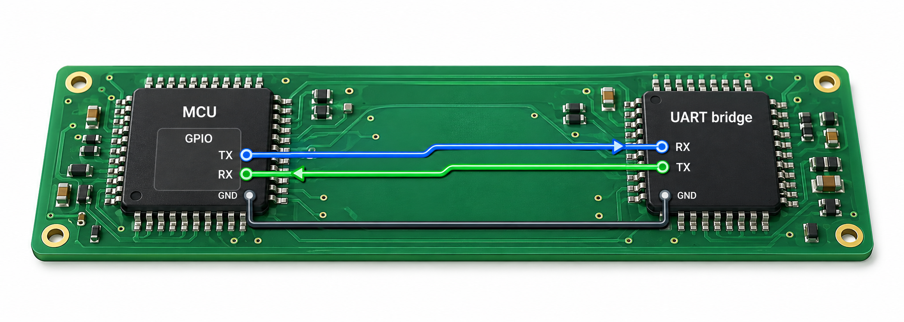
그림의 두 신호는 별도 연결입니다. UART logic-level IO와 RS-232 전압을 구분하고, 필요한 경우 적절한 transceiver를 사용합니다.
UART 프레임 형식과 sampling
Idle은 HIGH이고 START bit의 LOW를 기준으로 수신 타이밍을 잡습니다. 일반적인 8-bit UART는 LSB부터 보냅니다. 데이터 폭·parity·stop bit와 IO 전압도 송수신 양쪽이 맞아야 합니다.
수신 파형 비교
같은 Baud이면 각 bit의 중심에서 샘플링합니다. 수신 clock이 다르면 sampling 위치가 점차 이동합니다. 오차가 있어도 모든 byte가 반드시 깨지는 것은 아니며, 아래는 현재 byte에 대해 실제로 계산한 결과입니다.
정상 수신Correct Baud
정상 동작
송수신 Baud가 같습니다. Data와 stop bit의 중심에서 값을 관측합니다.
Baud 불일치Baud mismatch
Framing 오류Framing error
STOP bit가 LOW
수신기가 stop 구간을 LOW로 읽어 framing error를 보고합니다.
이상적인 bit 중심 sampling 모델입니다. 실제 oversampling 수신기의 내성, jitter, start 검출 오차와 overrun은 별도로 확인합니다.
GPIO 설정과 UART 수신 실패
설정
예시
실패 증상
MUX
UART TX/RX alternate function
GPIO로 남아 신호가 나오지 않음
DIR / OE
TX output, RX input
출력끼리 충돌 또는 부유 입력
BAUD
115200
Sampling drift, 문자 깨짐
FORMAT
8N1 / 8E1 / 8O1
Parity 또는 framing error
STATUS
RX valid, parity, overrun
오류 byte와 정상 byte를 구분
GPIO 출력 방식 비교
일반적인 UART TX는 push-pull 출력입니다. Open-drain을 사용하는 구성은 외부 pull-up과 상승시간 조건이 필요합니다.
Push-Pull
Open-Drain
항목
Push-Pull
Open-Drain
HIGH 출력
능동적으로 HIGH 출력
외부 저항이 HIGH 형성
LOW 출력
능동적으로 LOW 출력
LOW로 당김
특징
빠른 edge, 일반 UART 출력
공유 버스, 상승시간 검토
9-4. SPI와 QSPI
SPI의 Full-Duplex 전송 구조
SPI는 별도의 MOSI와 MISO 선으로 동시에 송신·수신합니다. Controller가 SCLK와 CS_n을 구동하고, 선택된 device가 MISO를 구동합니다. 네 신호는 서로 독립적인 배선입니다.
SPI 모드와 sampling
CPOL은 idle clock level, CPHA는 첫 번째 또는 두 번째 edge 중 어느 edge에서 sampling할지를 정합니다. 데이터는 반대 edge에서 갱신해 setup/hold 여유를 확보합니다. CPOL만 같고 CPHA가 다르면 shift된 데이터나 불안정한 수신이 생길 수 있습니다.
Mode
CPOL
CPHA
Sample edge
0
0
0
첫 rising
1
0
1
두 번째 falling
2
1
0
첫 falling
3
1
1
두 번째 rising
Mode 0 · CPOL=0, CPHA=0
Mode 1 · CPOL=0, CPHA=1
Mode 2 · CPOL=1, CPHA=0
Mode 3 · CPOL=1, CPHA=1
파란 세로 점선은 sampling edge입니다. Mode 0은 첫 rising edge 이전에 MSB가 준비되어야 합니다. 선택되지 않은 device의 MISO는 high-impedance이며, 이 그림은 선택 구간의 0/1을 표현합니다.
QSPI는 구간마다 사용 lane이 다릅니다
명령·주소·데이터 단계에서 쓰는 IO 폭을 넓혀 전송 시간을 줄입니다. 1-1-1, 1-1-4, 1-4-4 등의 표기는 각 단계의 lane 수를 나타냅니다.
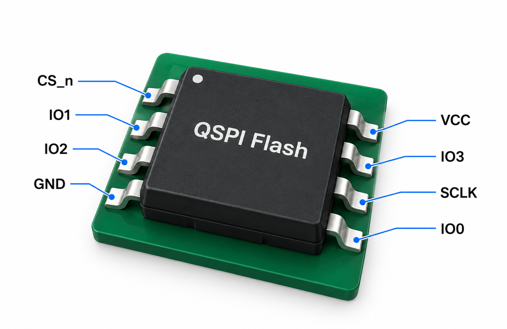
그림은 일반적인 8-pin serial flash 연결 예입니다. Pinout과 quad-enable, opcode 및 dummy 조건은 실제 부품 데이터시트로 확인합니다.
SDA와 SCL은 각각 pull-up 저항을 사용하는 open-drain 구조로, 여러 기기가 하나의 버스를 공유합니다.
실제 구현 예시 (PCB)
여러 칩이 동일한 SDA/SCL 라인을 공유하며, 각각의 pull-up 저항이 선을 HIGH로 올립니다.
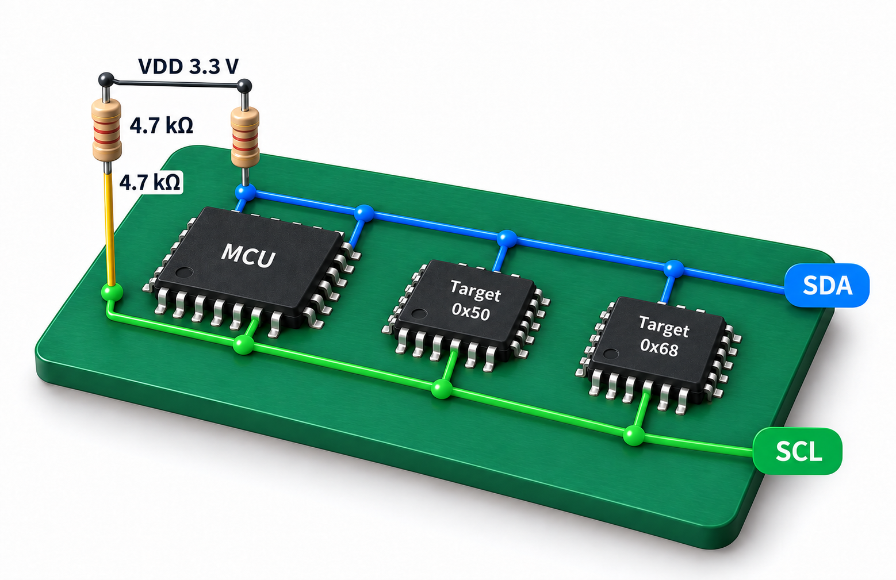
반복 START·읽기·NACK의 주체
I2C Register 읽기 예제 파형
내부 레지스터 주소를 지정한 후 STOP 없이 Repeated START를 내고 read로 전환합니다. 마지막 byte는 controller가 NACK를 보내 읽기를 끝냅니다. 데이터 bit는 SCL HIGH 구간에서 안정적이어야 합니다.
각 구간의 송신 주체와 데이터
7-bit 주소와 전송 byte
7-bit 주소에 전송 방향 R/W bit를 붙이면 버스에서 보내는 8-bit 주소 byte가 됩니다.
Write 주소와 register를 보낸 뒤 새 START로 방향을 전환합니다. 주소를 받은 target이 ACK하고, 읽은 마지막 data byte에는 controller가 NACK합니다.
I2C 주소와 응답
7-bit 주소와 R/W bit로 구성된 첫 byte의 비트 구성을 확인하고, ACK/NACK의 주체를 이해합니다.
전송 byte (8-bit)
상위 7 bit: 장치 주소 · 최하위 1 bit: R/W
전송 byte (Hex)
수신기는 byte 뒤의 9번째 clock에서 SDA를 LOW로 당겨 ACK합니다. 마지막 byte의 NACK는 읽기를 마치려는 controller가 보낼 수 있습니다.
Open-drain과 pull-up
Open-drain은 LOW만 구동하고, HIGH는 pull-up 저항으로 형성됩니다. 각 기기의 출력 상태를 선택해 버스 레벨을 확인합니다.
핵심 용어 정리
용어
설명
SDA
Data 및 ACK를 전달하는 공유 open-drain 선입니다. 각 구간의 송신 주체가 달라집니다.
SCL
Clock 선입니다. 수신 측 stretching을 지원하는 구성에서는 실제 HIGH 도달을 관측합니다.
Repeated START
STOP 없이 새 START를 내어 transaction을 이어갈 수 있는 조건입니다. Register 주소 설정 뒤 read 전환에 사용합니다.
Arbitration
SCL HIGH에서 보낸 bit와 관측 SDA를 비교합니다. HIGH를 내보내려 선을 놓았지만 LOW를 읽은 controller가 중재에서 물러납니다.
I3C
동적 주소 할당과 in-band interrupt 등의 기능을 제공하는 별도 규격 계열입니다. I2C 혼재와 push-pull 사용 구간의 조건을 원문에서 구분합니다.
두 controller의 주소 중재 확인
두 controller가 동시에 전송을 시작했을 때 주소 bit를 비교합니다. 이 모델은 동일한 R/W 방향에서 7-bit 주소를 비교합니다.
9-6. DDR와 LPDDR
DDR / LPDDR 인터페이스의 전체 구성
Controller는 명령 순서와 bank 사용을 관리하고, PHY는 DQ/DQS·CA/CK의 전기적 타이밍을 맞춥니다. 실제 채널과 소자 조건에 맞는 sampling 위치를 찾는 training은 명령 타이밍 제약을 대신하지 않습니다.
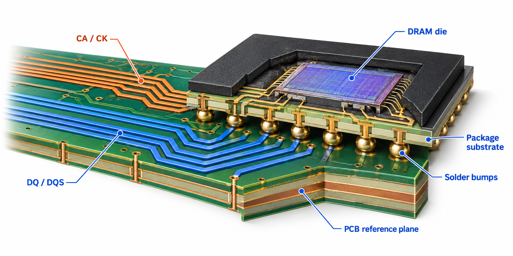
DQ / DQS의 Source-Synchronous 타이밍
Data와 함께 전달되는 strobe를 기준으로 sampling합니다. 1 UI는 data bit 하나의 시간입니다. 아래는 center-aligned DQS의 개념 예이며, 실제 read/write 방향과 세대에 맞춰 PHY가 지연을 조정합니다.
DQ / DQS 타이밍과 sampling 창
아이 다이어그램과 sampling margin
겹친 궤적은 개념도이며 실제 측정 결과가 아닙니다. UI와 eye opening을 전압·시간 축으로 구분합니다.
명령 타이밍과 data sampling은 다른 제약입니다
Controller는 bank 상태와 명령 간 최소 간격을 지킵니다. Training이 pass해도 refresh 또는 bank timing 위반이 사라지는 것은 아닙니다.
이름
의미
단위 확인
tRCD
ACT부터 READ / WRITE까지
ns와 nCK 조건의 조합
tRP
PRECHARGE 이후 다음 ACT까지
세대·speed bin의 최소값
tRAS
Row active 유지
최소 active 시간
tRFC
Refresh 회복
Density·모드에 따라 다름
DQ/DQS skew
Data와 strobe의 상대 위치
UI, ps, PHY delay tap
DQ / DQS training sweep
8개 DQ bit의 pass 구간을 겹쳐 공통 유효 구간을 찾습니다. 중앙 부근을 초기 delay로 삼고 전압·온도 변화와 다른 패턴에서도 margin이 남는지 확인합니다.
DDR와 LPDDR의 통합 관점 비교
항목
DDR
LPDDR
적용 맥락
서버·PC·고성능 시스템의 메모리
모바일·저전력 시스템의 메모리
전력·상태
세대별 전력 상태와 refresh 관리
저전력 상태와 모드별 복귀 관리
초기화 / training
해당 세대와 device 조건을 적용
해당 세대와 device 조건을 적용
신호 구성
CK, DQS, DQ, CA 등 세대에 따라 다름
세대별 신호 구조와 clock 구성을 확인
통합 확인
Controller 제약과 PHY margin을 모두 검사
전력 상태 전환까지 포함해 검사
모든 지연을 하나의 CAS latency로 대체하지 않습니다. Training pass를 모든 패턴과 PVT의 안정성 보장으로 해석하지 않습니다.
9-7. PCI Express
구조와 설계 조건
PCI Express는 Root Complex와 Endpoint를 point-to-point serial link로 연결합니다. 각 lane은 별도의 TX/RX 차동 쌍을 사용하며, 링크 폭을 늘려 여러 lane을 함께 사용합니다.
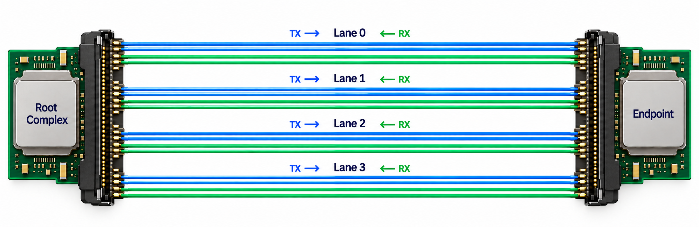
TX/RX는 왼쪽 Root Complex 기준입니다. 그림은 구조를 설명하며 실제 커넥터 pinout과 배선 치수를 나타내지 않습니다.
PCIe 통신 계층과 데이터 흐름
Transaction layer의 요청과 응답은 TLP로 운반됩니다. Data link와 Physical 계층이 인접 링크의 전달을 지원합니다. Posted write와 completion이 필요한 요청의 차이를 구분합니다.
TLP 구조 예
Legacy 3-DW memory request의 주요 필드를 표시합니다. DW0의 제어 필드는 축약했고, 요청 종류·주소 폭·revision에 따라 header가 달라집니다.
주요 계층의 역할과 검사
계층
주요 단위
검사
Transaction
Memory read/write, Completion
Tag, byte enable, completion 길이
Data link
Sequence, LCRC, ACK/NAK
Replay와 링크 신뢰성
Physical
Lane, symbol/block, ordered set
속도·폭 협상, equalization
예산
Encoding + packet + 유휴/재전송
세대와 workload의 가정
LTSSM · Link Training and Status State Machine
링크를 탐지하고 훈련한 뒤 L0로 진입합니다. 오류나 조건에 따라 Recovery를 반복할 수 있습니다.
Payload 처리율과 대역폭 예제
Gen1/2는 8b/10b, Gen3–5는 128b/130b 인코딩을 적용한 교육 예제입니다. 3-DW Memory Write의 header 및 link overhead를 합쳐 20 B로 근사하며, 유휴·재전송·flow-control 지연은 제외합니다.
전체 payload 비율을 별도로 0.8이라 가정하면 8 Gb/s × 4 × 0.8 ÷ 8 = 3.2 GB/s입니다. 이는 규격이 정한 고정 효율이 아닙니다.
핵심 용어와 설계 확인
용어
의미
TLP
Transaction의 주소·길이·tag와 선택적 payload를 운반
DLLP
Data-link 관리 정보. Transaction payload와 구분
LTSSM
Detect·Polling·Configuration·L0·Recovery 등 링크 상태를 관리
Generation
전송률, encoding 및 링크 동작 조건의 적용 세대를 명시
Link가 올라와도 목표 generation과 lane width가 확보된 것은 아닙니다. 협상 결과와 Recovery 반복을 함께 확인하고, 처리율 계산에는 encoding·packet overhead·유휴 시간의 가정을 기록합니다.
9-8. USB와 Type-C 및 PD
Type-C · USB data · PD를 따로 읽기
같은 Type-C 외형이라도 장치·케이블이 지원하는 데이터 속도와 전력 능력은 다를 수 있습니다. Host는 장치를 인식하고 구성을 선택하며, endpoint와 transfer type에 맞게 데이터를 교환합니다. 충전 성공만으로 고속 data 경로가 정상이라고 결론 내리지 않습니다.
USB Type-C 커넥터 단면과 핀 구성
뒤집어 연결할 수 있는 접점 구조입니다. CC가 연결 방향과 역할 판단에 쓰이며, 지원하는 data protocol과 전력 능력은 별도로 확인합니다.
Data role의 Host / Device와 power role의 Source / Sink는 서로 다른 분류입니다. 역할 교환을 지원하는 구성도 별도로 확인합니다.
케이블의 차이
커넥터가 같아도 내부 data pair, cable 전류 정격, e-marker 및 지원 모드가 다를 수 있습니다.
확인 항목
확인 이유
USB 2.0 data pair
D+ / D−를 통한 데이터 지원
고속 data pair
SuperSpeed 등의 경로 지원
전류·전압 정격
Source / Sink가 협상할 수 있는 전력 조건
Cable 식별
필요한 전력·속도 모드의 지원 정보
연결 방향과 mux
현재 방향에서 선택된 lane과 CC 상태
USB 2.0의 NRZI / bit stuffing을 모든 USB 세대의 PHY에 그대로 적용하지 않습니다.
연결부터 전원 계약까지의 교환 과정
CC 감지 뒤 PD를 지원하는 양쪽이 capability와 request를 교환합니다. 아래는 정상 전원 계약의 주요 메시지를 간추린 예시입니다.
메시지
방향
설명
Source_Capabilities
Source → Sink
공급 가능한 전력 조건 알림
Request
Sink → Source
제공된 조건 중 요청
Accept
Source → Sink
요청 수락
PS_RDY
Source → Sink
새 전원 조건 준비 완료
USB 데이터 전송 경로
VBUS 화살표는 Host가 Source인 연결 예입니다. Data role과 power role은 독립적으로 확인합니다.
USB 관련 항목 비교
축
확인할 문서 / 상태
예
Connector
핀과 방향
CC1/CC2, VBUS, GND
Data
Host/device와 지원 protocol
USB 2.0 D+/D−, 고속 pair
Power
Source/sink capability와 cable
Request → Accept → PS_RDY
Enumeration
Descriptor·address·configuration
전력 공급과 별도의 성공 조건
9-9. Ethernet
Ethernet 통신 경로와 계층 구성
MAC은 frame을 처리하고 PHY는 매체에 맞는 신호 전달을 담당합니다. PCS/PMA 등의 하위 계층, MAC–PHY interface와 magnetics의 적용은 선택한 PHY 구성에 맞춰 구분합니다.
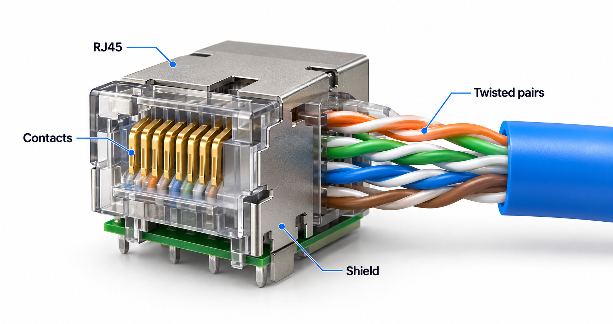
MAC–PHY 그림은 GMII 계열 신호를 간추린 예입니다. RGMII·SGMII 등은 신호 및 timing이 다르며, 1000BASE-X와 BASE-T의 line coding을 혼용하지 않습니다.
Ethernet frame 구조
VLAN이 없는 MAC frame의 필드입니다. 상위 계층 payload가 46 byte보다 짧으면 padding이 필요합니다. FCS는 frame 오류 검출에 사용됩니다.
Wire rate와 application payload
영역
Byte 또는 byte-time
역할
Preamble + SFD
8
동기화·frame 시작
MAC header
14
DA·SA·type/length
Payload
46–1500, VLAN 없는 예
상위 계층 data; 짧으면 padding
FCS
4
CRC 검사
IFG
12 byte-time
다음 frame까지의 간격
MDIO
Data frame과 별도
PHY 제어·상태 읽기
Payload 크기에 따른 전송 효율
Frame overhead와 수신 queue
MAC이 frame을 정상 수신해도 downstream 처리량이 부족하면 queue에서 손실될 수 있습니다. Buffer는 일시적인 burst를 흡수하지만 지속적인 속도 부족을 해결하지 못합니다.
Frame과 queue 조건
Frame 크기와 효율
수신 처리와 queue 동작
Queue는 고정 interval마다 도착과 service의 차이를 누적하는 모델입니다. 구간 내부 burst 시점은 포함하지 않습니다. 실제 sizing에서는 최대 frame burst, 서비스 지연, inter-frame gap과 buffer depth를 함께 검토합니다.
9-10. MIPI 카메라와 디스플레이
MIPI 기반 카메라와 디스플레이 연결 구조
CSI-2는 카메라 데이터, DSI는 디스플레이 전송에 사용하는 protocol 계열입니다. 이 논리적 전송 규격과 D-PHY / C-PHY 같은 물리 계층을 구분합니다.
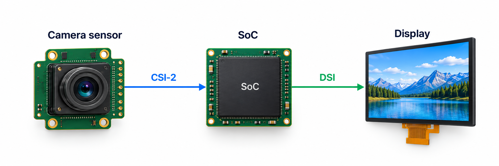
실제 지원 PHY, lane 구성과 동작 mode는 해당 protocol·PHY revision 및 IP 구성을 함께 확인합니다.
D-PHY Lane 구성 예
전달 clock을 쓰는 HS mode 예입니다. 한 차동 pair가 한 data lane을 이루고, 별도 clock pair가 기준을 전달합니다.
C-PHY Trio 구성 예
하나의 3-wire trio가 wire-state 전이로 data와 clock 정보를 전달합니다. 아래는 6-wirestate mode의 예이며 세 개의 정현파 clock을 뜻하지 않습니다.
비교
D-PHY 예
C-PHY 예
전송 연결
2-wire 차동 data lane
3-wire trio
Clock
전달 clock mode 예
Embedded clock
신호 표현
HS 차동 레벨
H / M / L wire state
적용 확인
Revision별 지원 mode
6/18-wirestate 등 revision 확인
영상 요구에서 lane 예산으로
해상도·frame rate·pixel format으로 활성 pixel payload를 계산하고, 추가 traffic과 lane 구성을 함께 고려합니다. RAW10과 RGB888은 같은 해상도·fps여도 bit/pixel이 다릅니다.
예시
Payload 계산
결과
1920×1080, 60 fps, RAW10
1920×1080×60×10
1.24416 Gb/s
같은 영상, RGB888
1920×1080×60×24
2.985984 Gb/s
추가 traffic 15%
RAW10 × 1.15
1.430784 Gb/s
2 D-PHY data lane
합계 / 2
0.715392 Gb/s/lane
12-bit RAW의 활성 pixel payload는 약 1.493 Gb/s입니다. 저장 시 정렬된 byte 수와 link의 bit/pixel을 혼용하지 않습니다. Sensor·display의 packet과 blanking 조건도 다릅니다.
영상 대역폭 예산
D-PHY lane의 예산 모델입니다. C-PHY symbol rate에 이 bit-rate 계산을 그대로 적용하지 않습니다. 실제 설계에서는 packet overhead·blanking·지원 mode·전기적 여유를 추가 검토합니다.
9-11. CAN과 LIN
CAN 버스 구성과 신호 특성
CAN은 여러 node가 공유 버스에 접근하고 arbitration field의 dominant / recessive 관계로 우선순위를 결정합니다. 아래는 고속 CAN의 선형 버스와 양 끝 종단 예입니다.
CAN 버스의 차동 신호
5 V 고속 CAN transceiver에서의 대표적인 전압 예입니다. 실제 출력과 receiver threshold는 사용하는 부품의 조건과 정격으로 확인합니다.
항목
Recessive (1)
Dominant (0)
CANH
약 2.5 V
약 3.5 V
CANL
약 2.5 V
약 1.5 V
CANH − CANL
약 0 V
약 2 V
상태
버스를 해제
Dominant 차동 구동
Bit 단위 우선순위 중재
동시에 송신을 시작하면 내보낸 bit와 관측한 버스 값을 비교합니다. Recessive 1을 내보냈지만 dominant 0을 읽은 node는 송신을 멈추고 다른 frame을 방해하지 않습니다.
동일한 standard 11-bit identifier 형식과 시작 조건의 비교입니다. Standard / extended 또는 data / remote 형식이 다르면 추가 arbitration bit를 확인합니다. 중재 패배와 데이터 오류는 구분합니다.
LIN의 단일선 통신과 스케줄 구조
LIN은 commander가 schedule에 따라 header를 보냅니다. 지정된 publisher가 response를 보냅니다. Publisher는 frame 설정에 따라 responder 또는 commander가 될 수 있습니다.
CAN과 LIN의 스케줄 책임
항목
CAN 예
LIN 개념
접근 결정
Bitwise arbitration
Commander schedule
우선순위
11-bit ID 비교
Schedule slot
오류 처리
Error frame·상태·counter
응답 timeout·checksum 등
설계 검사
높은 priority의 지속 traffic
Slot 길이와 response deadline
같은 조건에서 0x120과 0x130이 경합하면 bit 4에서 dominant를 내는 0x120이 계속 송신합니다. 정상적인 중재 패배를 송신 충돌이나 PHY 고장으로 단정하지 않습니다.
9-12. SerDes와 PHY
SerDes 신호 경로와 주요 블록
Serializer가 병렬 data를 직렬 stream으로 바꾸고 수신 경로가 원래 data를 복원합니다. 채널 손실에 따른 ISI를 줄이기 위해 송수신 등화를 적용하며, CDR은 data 전이에서 sampling 위상을 추적합니다.
Transmitter (TX)
Channel (PCB / cable)
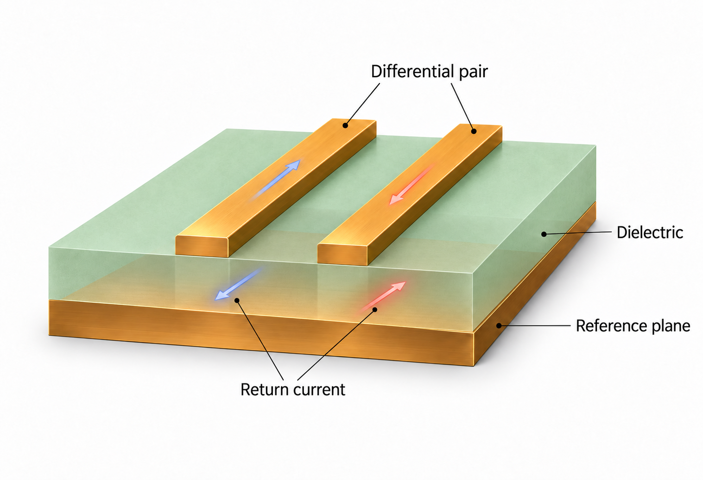
Receiver (RX)
Equalization 전후의 Eye 비교
같은 조건의 정규화된 예제 trace를 겹쳐 봅니다. 폭과 높이를 각각 시간·전압 여유로 구분하고, BER 판정에는 별도의 통계 측정이 필요합니다.
보정 전 · 정규화 모델
선택한 보정 계수 적용
PRBS bit열에 시정수 0.42 UI의 1차 채널과 deterministic jitter·noise를 적용한 교육 모델입니다. 보정은 채널 출력의 변화율을 더하는 lead equalizer이며, 보정 후 noise 증가도 포함합니다. 수직 간격은 bit 중앙의 최소 HIGH − 최대 LOW, 전이 폭은 zero-crossing 분포에서 계산합니다. 실측 eye·RMS 또는 BER 결과가 아닙니다.
Equalizer의 동작 원리
CTLE · Continuous-Time Linear Equalizer
주파수에 따른 이득을 조정해 채널의 고주파 손실을 보상합니다. Noise도 함께 증폭할 수 있습니다.
회색: 1차 low-pass 채널 · 파랑: 예제 CTLE · 초록: 합성 응답. 주파수는 zero 주파수 fz로 정규화했습니다.
DFE · Decision Feedback Equalizer
이전에 판정한 symbol을 이용해 현재 symbol에 남은 ISI를 뺍니다. 잘못된 decision이 feedback되면 오류 전파가 생길 수 있습니다.
Eye opening을 해석하는 순서
관측
가능한 원인
다음 검사
수평 여유 감소
Jitter, CDR 추적, ISI
Clock source와 transition pattern
수직 여유 감소
Noise, attenuation, offset
공급·수신 이득·termination
비대칭 eye
Duty distortion, channel mismatch
P/N skew와 edge별 지연
BER 증가
여러 요인의 결합
시간·pattern·PVT를 고정한 통계 측정
채널과 sampling margin
Eye가 시각적으로 열려 보이는 것만으로 목표 BER을 만족한다고 판정하지 않습니다. 실제 회로와 규격 판정은 정해진 시험 조건으로 수행합니다.
9-13. SI와 PI 및 보드 채널
Return path와 PDN을 함께 보는 이유
Signal current의 귀환 경로가 reference plane의 틈을 우회하면 loop inductance와 방사 조건이 바뀝니다. 공급 전압 변동은 transmitter swing과 receiver threshold에도 영향을 주므로 SI와 PI를 함께 확인합니다.
PCB Stack-up · Signal path · Return current · PDN
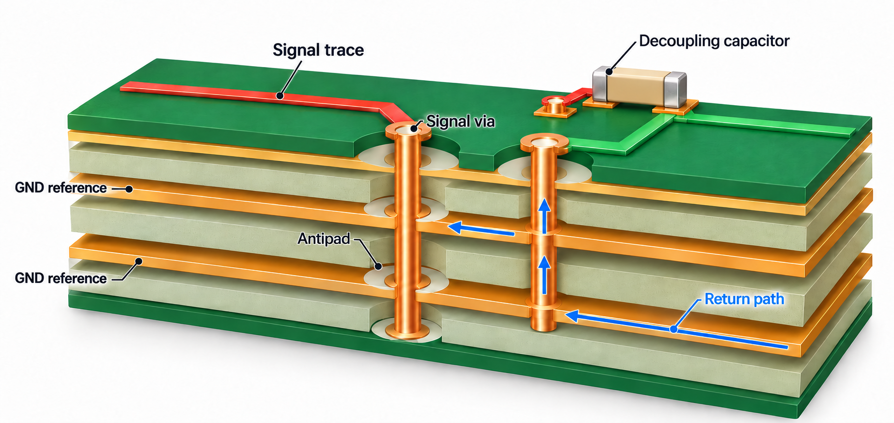
Signal via와 plane은 antipad로 절연되며, reference 변경 시 return path를 함께 검토합니다. 그림의 배치와 치수는 특정 제품의 stack-up 규격이 아닙니다.
임피던스 불연속과 반사
부하 ZL과 선로 Z₀의 경계에서 Γ = (ZL − Z₀) / (ZL + Z₀)입니다. 정합이면 반사가 0이고 open / short는 서로 반대 부호의 반사를 만듭니다.
조건
Γ
Open (ZL → ∞)
+1
Short (ZL = 0)
−1
정합 (ZL = Z₀)
0
채널 및 전원 파형 예
아이 다이어그램 · 개념도
전원 전압 강하 · 정규화 예
모양과 관측 지표를 설명하는 예제이며 실제 보드 측정 결과가 아닙니다.
SI와 PI의 비교
항목
Signal Integrity
Power Integrity
주요 대상
신호의 전송 품질
공급 전압의 안정성
주요 지표
임피던스·반사·손실·eye·jitter
PDN impedance·전압 강하·ripple
주된 현상
반사·손실·crosstalk·return 불연속
SSN·PDN 공진·IR drop
측정 / 해석
TDR·S-parameter·eye
임피던스·transient·전압 ripple
상호 연관
전원 noise가 신호 swing에 영향
Switching current가 PDN에 영향
관측에서 원인 추적까지
관측
단서
검사
TDR 양의 step
높은 impedance 경계
Via, connector, open 방향
TDR 음의 step
낮은 impedance 경계
Capacitive discontinuity
동시 전환 시 악화
SSN·PDN impedance
Ground bounce, decoupling 위치
Return-plane 변경
귀환 경로 불연속
Stitching via와 reference 경계
Target impedance
허용 ΔV / ΔI
주파수 범위와 transient 조건
임피던스 경계의 반사 계산
손실 없는 선로의 DC step bounce 모델입니다. Return path 절단·via·crosstalk·PDN은 별도의 주파수 의존 모델과 측정이 필요합니다. 모든 배선을 임의로 50 Ω로 고정하지 않습니다.
9-14. 인터페이스 선택과 성능 예산
적용 예: Processor ↔ Accelerator 연결
동일한 workload를 기준으로 후보의 전송 예산과 구현 조건을 비교합니다.
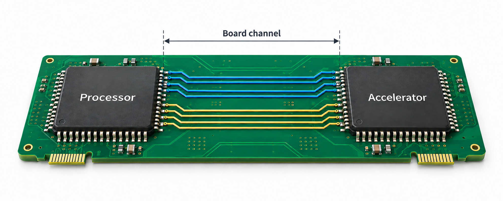
주요 입력 조건 · Workload
Workload 기준 인터페이스 후보 비교
모든 후보에 같은 payload 크기와 transaction 빈도를 적용합니다. 아래 값은 직렬화 시간의 단순 비교를 위한 가정이며, 실제 제품의 처리율·지연 보장이 아닙니다.